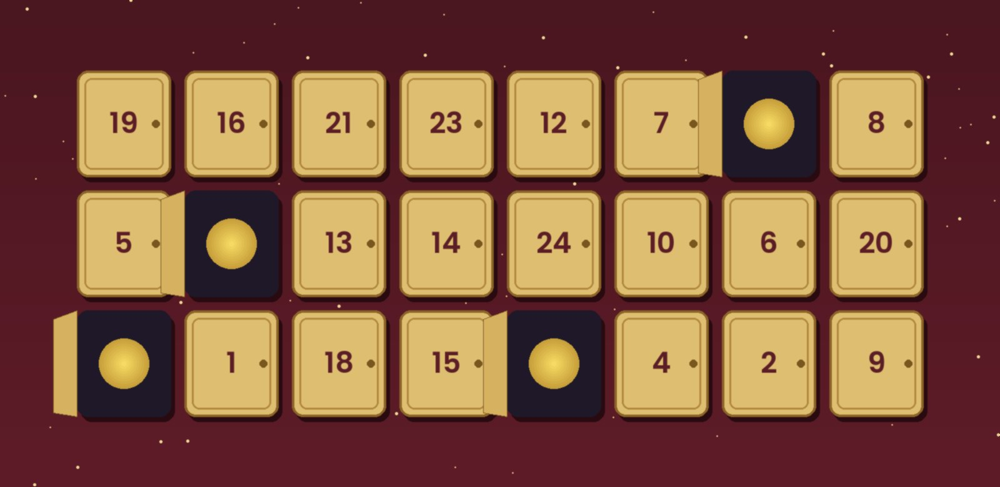

LEGO Harry Potter adventskalender 2026: is er een nieuwe?
Nee. LEGO heeft voor 2026 vijf adventskalenders uitgebracht, Marvel, Star Wars, City, Friends en Disney Princess, en na vijf Harry Potter-kalenders op rij (2021 tot en met 2025) zit Harry Potter daar dit jaar niet bij. Bij LEGO zelf staan alle Harry Potter-kalenders, ook die van 2025, als uit de handel. Bij bol liggen er nog wel vier. Hieronder per editie wat erin zit volgens LEGO, wie erin zit, en welke je kiest.

In het kort
Het korte antwoord: een LEGO Harry Potter adventskalender van 2026 bestaat niet, maar de oudere edities zijn nog te koop en een kind dat er geen heeft gehad, merkt het verschil niet. Wil je kind Harry, Ron en Hermelien, kies dan die van 2021 of 2023. Wil je de nieuwste, dan die van 2025. Klik op een naam om naar de uitleg te springen; de prijzen komen live van bol.
Alle edities naast elkaar
Setnummer, leeftijd, aantal onderdelen en figuren zoals LEGO ze zelf opgeeft op de productpagina van elke set, nagekeken op 3 november 2026.
| Editie | Setnummer | Leeftijd volgens LEGO | Onderdelen | Thema en figuren |
|---|---|---|---|---|
| 2025 | 76456 | 7+ | 278 | 8 leerlingen in Zweinstein-kersttruien, onder wie Harry, Cho Chang, Draco en Loena, plus 6 bouwbare wezens zoals Hedwig, Scheurbek en Aragog |
| 2024 | 76438 | 7+ | 301 | Bij bol niet meer gevonden |
| 2023 | 76418 | 7+ | 227 | Zweinsveld: 6 minifiguren (Harry, Ron, Hermelien, Draco, Perkamentus en Madame Rosmerta) en 18 minimodellen |
| 2022 | 76404 | 7+ | 334 | Een scène per film: 7 minifiguren, onder wie Sirius Zwarts, Heer Voldemort en Jammerende Jenny |
| 2021 | 76390 | 7+ | 274 | Goudgrijp en een bordspel: 6 minifiguren (Harry, Ron, Hermelien, Draco, Dirk Duffeling en Grijphaak) |
Twee dingen vallen op als je ze zo naast elkaar zet. Harry, Ron en Hermelien zitten alle drie alleen in de kalenders van 2021 en 2023; in de nieuwste, die van 2025, zit wel Harry maar geen Ron en geen Hermelien. En de grootste is niet de nieuwste: die van 2022 heeft de meeste onderdelen, die van 2023 de minste.
Waar het verschil in zit
Wie er uit het deurtje komt. Elke editie heeft een eigen thema en dus een eigen groep personages. In 2025 zijn het leerlingen in kersttruien en de wezens uit de boeken, in 2023 het dorp Zweinsveld met de bekende drie, in 2022 de films, met per film een scène, en in 2021 de tovenaarsbank Goudgrijp. Voor een kind dat vooral om Harry, Ron en Hermelien geeft, is dat het belangrijkste verschil.
Wat er op 25 december ligt. Bij de kalenders van 2021 en 2022 hoort een bordspel: in 2022 kun je dat volgens LEGO spelen als alle vakjes open zijn, in 2021 zit achter vakje 24 een draaitol voor het bordspel achterop de doos. Bij 2023 en 2025 heb je na afloop een verzameling setjes en figuren om mee door te spelen.
Hoeveel er te bouwen is. Alle vier zijn volgens LEGO voor zeven jaar en ouder, maar het aantal onderdelen loopt uiteen, van de kleinste uit 2023 tot de grootste uit 2022. Wie vooral wil bouwen, kijkt naar 2022; wie vooral wil spelen met figuren, naar 2025.
Het jaartal maakt voor het kind niets uit, voor jou wel. Er staat geen datum in de deurtjes, dus een kalender van 2022 is in december 2026 net zo spannend. Wat wel telt: oudere edities worden niet bijgemaakt, dus wat er nu bij bol ligt is wat er is. En controleer of de editie niet al eens in huis is geweest.
Onze keuzes
LEGO Harry Potter adventskalender 2025
De meest recente Harry Potter-kalender, en daarmee de logische eerste keuze als hij nog niet in huis is. Acht leerlingen in Zweinstein-kersttruien, elk met een toverstok, en zes bouwbare wezens, waaronder Hedwig, Scheurbek met verstelbare vleugels, Aragog en een hertpatronus. Daartussen voorwerpen als de Sorteerhoed, een doos Smekkies in Alle Smaken en het Monsterlijke Monsterboek, allemaal volgens LEGO.
- De meeste minifiguren van de vier LEGO-edities hier: acht
- De enige met de wezens uit de boeken, van Hedwig tot Aragog
- Leerlingen die je in andere sets weinig ziet, zoals Hannah Albedil en Benno Zabini
- Geen Ron en geen Hermelien
- Kwam hij vorig jaar al, dan is het precies dezelfde kalender
- Nog maar een handvol beoordelingen bij bol
LEGO Harry Potter adventskalender 2023
Het hele jaar draait om Zweinsveld, het tovenaarsdorp bij Zweinstein: volgens LEGO hebben De Drie Bezemstelen, café Zwijnskop, Zonko's Fopmagazijn en Zacharinus' Zoetwarenhuis elk twee of drie minimodellen in de kalender. De zes minifiguren zijn Harry, Hermelien, Ron, Draco, Perkamentus en Madame Rosmerta, dus de bekende drie zitten er alle drie in.
- Harry, Ron en Hermelien, plus Perkamentus
- Achttien minimodellen, meer kleine bouwsels dan bij de andere edities
- Een duidelijk thema: na afloop staat er een stukje Zweinsveld
- De minste onderdelen van de vier
- Scoort bij bol lager dan de andere LEGO-edities: kijk naar de sterren in het blok
- Minimodellen zijn klein; een kind dat grote setjes verwacht, kan dat tegenvallen
LEGO Harry Potter adventskalender 2022
Met 334 onderdelen de grootste van alle edities, en de enige met een slim idee erachter: volgens LEGO bouw je met de eerste drie cadeautjes een scène uit de eerste film, met de volgende drie een scène uit de tweede, en zo verder. Als alle vakjes open zijn, is er een bordspel. De zeven minifiguren zijn Harry, Sirius Zwarts, Jammerende Jenny, Heer Voldemort, Hildebrand Slakhoorn, Nymphadora Tops en Marcel Lubbermans.
- De meeste onderdelen van alle Harry Potter-kalenders
- Een scène per film, dus het kind loopt in december de hele reeks door
- Een bordspel voor als alle deurtjes open zijn
- Geen Ron en geen Hermelien
- Voldemort en de latere films: leuker voor wie de films al gezien heeft
- Weinig beoordelingen bij bol, dus daar valt weinig uit af te leiden
LEGO Harry Potter adventskalender 2021
De oudste die wij nog met een productpagina van LEGO kunnen controleren. Zes minifiguren: Harry, Ron, Hermelien, Draco, Dirk Duffeling en de kobold Grijphaak, met als groot bouwwerk de kluis vol goud in Goudgrijp. Achter vakje 24 zit volgens LEGO een draaitol waarmee je het bordspel achterop de doos speelt, en er zitten twee tovenaarskaarttegels bij.
- Harry, Ron en Hermelien alle drie
- Op 24 december een spel voor het hele gezin, achterop de doos
- Goudgrijp en Grijphaak, een stuk van het verhaal dat in de andere edities niet zit
- De oudste editie: kijk goed naar de prijs, oude kalenders worden niet goedkoper
- Zes minifiguren, minder dan bij 2025 en 2022
- Het bordspel staat op de doos, dus die moet je heel houden
Schleich Wizarding World adventskalender
Geen LEGO, en dat is precies de reden om hem te noemen. Schleich maakt kant-en-klare speelfiguren, dus hier valt niets te bouwen en niets kwijt te raken in kleine onderdelen. Voor het kind dat van Harry Potter houdt maar niet van bouwen, of dat al een LEGO-kalender heeft gehad.
- Geen bouwwerk: openmaken en meteen spelen
- Past bij andere Schleich-figuren die het kind misschien al heeft
- Een alternatief als alle LEGO-edities al in huis zijn geweest
- Wat er per deurtje in zit, hebben wij niet bij Schleich zelf kunnen nakijken
- Weinig beoordelingen bij bol
- Past niet bij de LEGO die er al in huis is
Welke kies je voor wie
Het kind wil Harry, Ron en Hermelien. Dan 2023 of 2021. 2023 als het om het tovenaarsdorp en veel kleine bouwsels gaat, 2021 als er op 24 december een spel op tafel moet.
Het kind had vorig jaar de kalender van 2025. Dan een oudere editie, en het maakt niet uit dat die ouder is. Kijk naar het setnummer op de doos (zie hieronder) om zeker te weten welke je hebt.
Een kind van zeven. LEGO zet alle edities op zeven jaar en ouder. Op die leeftijd zijn de kleine bouwsels van 2023 en de figuren van 2025 het makkelijkst; de filmscènes van 2022 zijn leuker voor wie de films al kent.
Jonger dan zeven, of geen bouwer. Dan geen LEGO-kalender. De Schleich-kalender is dan het alternatief met Harry Potter, en anders staan er kalenders met grotere figuren in onze gids met de zes beste adventskalenders voor kinderen.
Het hoeft geen Harry Potter te zijn. Dan is een kalender van dit jaar de betere keuze. De vijf nieuwe LEGO-kalenders van 2026 staan naast elkaar in welke LEGO adventskalender 2026.
Wat wij niet zouden kopen
Een Harry Potter-kalender zonder bekende maker. Bij bol staat een kalender die simpelweg "Harry Potter Adventskalender" heet. Toen wij op 3 november 2026 keken, scoorde die bij kopers duidelijk lager dan elke LEGO-editie, en de omschrijving maakt niet duidelijk wat er achter de deurtjes zit. Voor ongeveer hetzelfde geld heb je een LEGO-kalender waarvan je precies weet wat erin zit.
Wachten op een editie van 2026. Die komt er niet: LEGO heeft zijn kalenders voor dit jaar al uitgebracht en Harry Potter zit er niet bij. Wie wacht, verliest alleen tijd, en de oudere edities worden niet bijgemaakt.
Een kalender die je in december bestelt. Hij gaat op 1 december open. Van deze oudere edities is de voorraad wat hij is, en wie in december bestelt, begint met een paar deurtjes tegelijk.
Veelgestelde vragen
Is er een LEGO Harry Potter adventskalender 2026? Nee. De LEGO-adventskalenders van 2026 zijn Marvel, Star Wars, City, Friends en Disney Princess. De laatste Harry Potter-kalender is die van 2025 (set 76456), en die staat bij LEGO zelf inmiddels als uit de handel. Bij bol is hij nog wel te koop.
Welke LEGO Harry Potter adventskalenders zijn er nog te koop? Bij bol vonden wij op 3 november 2026 de edities van 2025 (76456), 2023 (76418), 2022 (76404) en 2021 (76390), plus een oudere uit 2020. Die van 2024 (76438) vonden wij niet.
Wat zit er in de LEGO Harry Potter adventskalender 2025? Volgens LEGO acht minifiguren in Zweinstein-kersttruien (Harry Potter, Cho Chang, Draco Malfidus, Hannah Albedil, Angelique Jansen, Loena Leeflang, Benno Zabini en Carlo Kannewasser), zes bouwbare wezens zoals Hedwig, Scheurbek en Aragog, en minimodellen zoals de Sorteerhoed en het Monsterlijke Monsterboek. Samen 278 onderdelen.
Welke LEGO Harry Potter adventskalender is de grootste? Die van 2022 (76404), met 334 onderdelen. De kleinste van de edities hier is die van 2023 (76418), met 227.
Vanaf welke leeftijd is de LEGO Harry Potter adventskalender? Vanaf zeven jaar, volgens LEGO. Dat geldt voor alle edities van 2021 tot en met 2025.
Hoe wij deze vijf gekozen hebben
Dit zijn alle LEGO Harry Potter-adventskalenders die wij op 3 november 2026 bij bol vonden en waarvan LEGO de productpagina nog online heeft, plus één kalender zonder bouwen. De editie van 2020 ligt ook nog bij bol, maar LEGO heeft daar geen productpagina meer van, en wij zetten geen inhoud op deze pagina die we niet bij de maker zelf kunnen nakijken. De feiten over de inhoud, de leeftijd en het aantal onderdelen komen van de productpagina's van LEGO, niet van een winkel. Alle vijf zijn stuk voor stuk nagemeten op prijs en levertijd bij bol, voor het laatst op 3 november 2026.
Over sterren: de aantallen beoordelingen zijn bij alle vijf laag, ook bij de edities die al jaren verkocht worden. Een hoge score uit een handvol beoordelingen zegt weinig. Het aantal staat in elk blok, zodat je dat zelf kunt wegen.
Via de knoppen naar bol verdienen wij een kleine commissie. Dat verandert niets aan wat hier staat: valt een kalender bij bol weg, dan verdwijnt het blok inclusief onze tekst, zodat er nooit een aanbeveling blijft staan bij iets wat er niet meer is.
💡 Handig om te weten
Het setnummer op de doos is de snelste manier om te zien welk jaar je in handen hebt: 76456 is 2025, 76438 is 2024, 76418 is 2023, 76404 is 2022 en 76390 is 2021.
Meer Harry Potter op Heldenshop: alles over Harry Potter, de vier afdelingen van Zweinstein en toveren als Harry Potter.